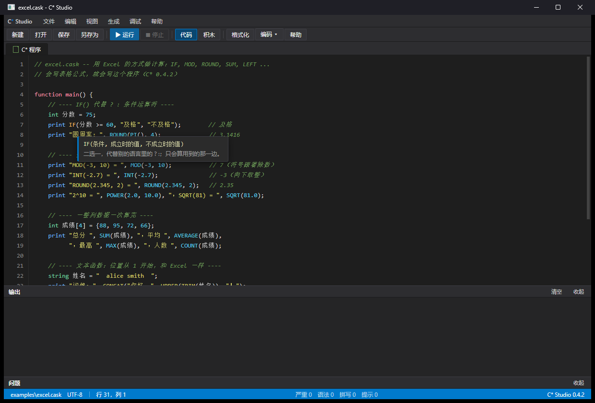
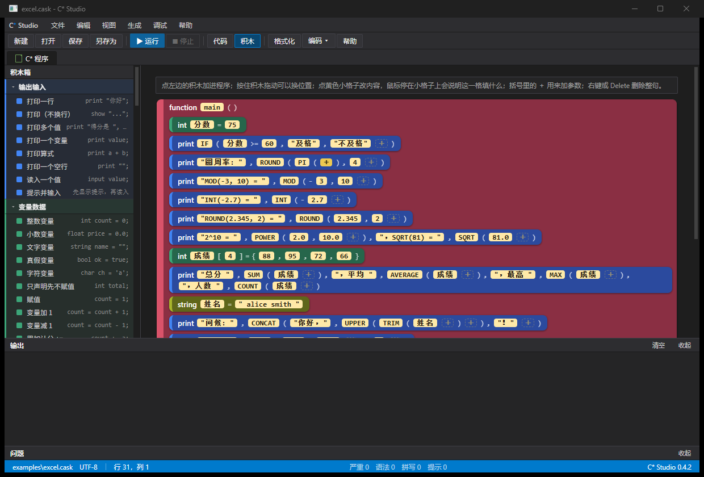

版本 0.5.1 — 一门语法像 C、关键字贴近初中英语词汇的小语言。 源文件后缀：
.cask编译器：bin\caskc.exe编辑器：bin\caskide.exe本文件是速查手册，把语言的每一处细节都列清楚。想跟着课学，选一本： | 教材 | 文件 | 适合谁 | |------|------|--------| | C* 小学版教程 |docs\小学版教程.md| 小学高年级，第一次学编程 | | C* 初中版教程 |docs\初中版教程.md| 初中，把语言系统学一遍 | | C* 语言 必修一 |docs\普高教材必修一.md| 普通高中信息技术课 | | C* 语言 选修一 |docs\普高选修一.md| 高中选修：算法与窗口程序进阶 | | C* 语言基础 |docs\高职教程CStar语言基础.md| 高职，面向就业 | 0.5.1 相对 0.5.0 的变化 * 新增三个头文件（控制台程序也能用，详见 5.8）： *use "C_OS.cash";—— 操作系统：os_pid/os_cores/os_ram/os_cpu/os_hostname/os_platform/isadmin/uptime/findproc。 *use "C_NET.cash";—— 网络与攻防：isurl/isip/urlhost/urlport/fnv1a/base64/unbase64/hostalive（被动校验、编码、哈希、探活）， 主动侦察层bannerget/httpcode/dnsresolve（只对有权访问的目标使用）。 *use "C_SC.cash";—— S/C 便携化交互：isportable/copytoexe/freebytes/diskfree/is64bit/portcheck/portscan。 * 积木视图补齐「文件与系统」及三个新分类：C_IO.cash的「文件与系统」积木， 以及「操作系统」「网络与攻防」「便携化交互」三类，都要先use对应头文件才出现 （积木箱共 14 类，见 3.4）。 * VS Code 扩展升级（0.5.1）：.cask文件带语言图标；工具栏新增「运行」按钮 （编译并运行，可选保留控制台）；保存/停顿自动跑--check，把每条问题按P|行|列|信息解析进「问题」面板，实时语法检查（见第 10 节）。 0.5.0 相对 0.4.2 的变化 * 新增use "C_IO.cash";：打开"文件与系统"工具箱——readfile/writefile/appendfile/fileexists/makedir/appdir/envget/launchwait。 控制台程序也能用，不必先开窗口（见 5.4b）。 * 界面美化在 Windows 上真正生效：按钮改成 owner-draw 自绘，csbg/cstext/csfont能改按钮底色与文字；csbg(窗口, 色)改窗口底色；输入框背景与文字底色 一致；csfont按 DPI 把磅换算成像素，不再出现超大字号（见 5.6）。 * 新增完整示例examples\mc_launcher.cask：自动探测 Java、自动找 jar、记住配置、 启动 Minecraft，是 C_IO + C_CSS 的综合范例。 * 汇编后端修正：TRUE()/FALSE()参与表达式、char右操作数符号扩展、 数组初始化超出长度、INT64_MIN % -1崩溃、中文函数嵌套调用、--fast下字符自增漏检查；--run现在会透传被运行程序的退出码。 * 教材同步修订：五本教材新增文件读写与界面美化内容，并把"先翻译成 C 再交给 gcc" 的旧说明改为"直接生成 x86-64 汇编，用 as + ld 链接"。 更早的 0.4.2 带来了 C 风格类型名int / float / string / char（旧名number / real / text / letter仍可用）、C_OPED.cash窗口头、C_CSS.cash美化头、积木视图头文件插件和 Visual Studio 2026 深色编辑器界面。
C*（读作 "C Asterisk"）是一门入门友好的编程语言：
| 目标 | 怎么做到的 |
|---|---|
| 像 C，好迁移 | 大括号、分号、运算符都和 C 一样 |
| 关键字看得懂 | print 打印、int 整数、function main() 主程序、if/for/while 照旧 |
| 两种写法，从简到繁 | 代码视图写 .cask，积木视图拖积木，两个视图随时切换（见 3.4） |
| 运行安全 | 溢出、除零、数组越界都会报错并指出出错行，而不是乱算或崩溃 |
| 整洁易懂 | 局部变量自动初始化为 0 / 空，先用后赋不会读到垃圾值 |
| 名字好写 | 变量名、函数名可以用中文（number 苹果 = 3;） |
| 跑得快 | .cask 直接生成 x86-64 汇编，再用 as + ld 链接成原生 exe（不经过 C 编译器） |
一个完整的例子：
// guess.cask -- 猜数字
function main() {
int secret = now() % 100 + 1;
int guess = 0;
print "我想了一个 1 到 100 的数，猜吧！";
while (guess != secret) {
input guess;
if (guess < secret) { print "小了"; }
else if (guess > secret) { print "大了"; }
}
print "猜对了！";
}/ 处理）as / ld；MinGW-w64：Dev-C++、MSYS2、w64devkit、Strawberry Perl 里都自带）。编译 .cask 只需要它们，不需要 gcc
build.bat / build.sh）才需要 gcc、g++C_AS\
├─ compiler\
│ ├─ caskc.c 编译器源码（C 语言写成；前端 + 汇编后端入口）
│ ├─ asm_backend.inc x86-64 汇编后端（.cask → .s，Windows/Linux 双 ABI）
│ ├─ cask_rt.c 控制台运行时（编译进 libcastrt.a）
│ ├─ cask_gui.c 窗口 / CSS 运行时（编译进 libcastrt.a）
│ ├─ cask_io.c 文件与系统运行时（编译进 libcastrt.a）
│ ├─ cask_os.c 操作系统运行时（编译进 libcastrt.a）
│ ├─ cask_net.c 网络与攻防运行时（编译进 libcastrt.a）
│ ├─ cask_sc.c 便携化交互运行时（编译进 libcastrt.a）
│ ├─ cask_rt.h 运行时语义基准与内建声明
│ ├─ C_OPED.cash 窗口程序头（use "C_OPED.cash"; 打开 C / Win32 世界）
│ ├─ C_CSS.cash 美化头（配 C_OPED 用）
│ ├─ C_IO.cash 文件与系统头（控制台程序也能用）
│ ├─ C_OS.cash 操作系统头（查系统信息、进程、权限）
│ ├─ C_NET.cash 网络与攻防头（校验、编码、哈希、探测）
│ └─ C_SC.cash 便携化交互头（便携判断、就地写文件、扫本机端口）
├─ editor\
│ ├─ webide.c C* Studio 编辑器宿主（原生窗口 + 本机网页服务 + 编译运行桥）
│ ├─ wv2.cpp WebView2 接入层（把网页放进原生窗口里）
│ └─ webview2\ WebView2 SDK（头文件和 WebView2Loader.dll）
├─ web\ 编辑器界面（网页：index.html / style.css / editor.js / app.js / blocks.js）
├─ docs\ 说明书与教材（Markdown 是正文，html 由脚本生成）
│ ├─ CStar手册.md 速查手册（本文件）→ manual.html
│ ├─ 小学版教程.md / 初中版教程.md / 普高教材必修一.md
│ ├─ 普高选修一.md / 高职教程CStar语言基础.md
│ ├─ md2html.py 把上面的 .md 转成同名 .html
│ ├─ check_doc_code.py 把教材里每个完整例子真编译一遍
│ └─ images\ 文档里的截图
├─ examples\ 示例程序
├─ tests\ 测试程序 + 期望输出
├─ vscode-ext\ VS Code 插件（.cask 高亮、补全、运行按钮、实时语法检查）
├─ dist\ 打包好的发行文件（zip / vsix）
├─ bin\ build.bat 生成：caskc.exe、caskide.exe、libcastrt.a、libgcc.a、
│ cask_rt.h、C_OPED.cash / C_CSS.cash / C_IO.cash / C_OS.cash /
│ C_NET.cash / C_SC.cash、web\、WebView2Loader.dll
├─ build.bat 一键构建整个工具链
├─ run_tests.bat 跑全部测试
└─ README.mdbuild.bat会依次生成 bin\caskc.exe（编译器）、bin\libcastrt.a（预编译运行时）、
bin\caskide.exe（编辑器），并把 libgcc.a、cask_rt.h、三个 .cash 头和编辑器界面
（web\ → bin\web\、WebView2Loader.dll）复制进 bin\。
构建工具链需要 gcc 和 g++；但用户编译 .cask 时只需要 as / ld，
链接的是已经编好的 libcastrt.a，不会再调用 C 编译器。
运行测试用：
run_tests.bat重新生成网页版说明书（需要 Python 3）：
python docs\md2html.py它会把 docs\ 下的每一本 .md 都生成同名的 .html（手册固定叫 manual.html）：
小学版教程、初中版教程、普高教材必修一、普高选修一、高职教程，一次全部更新。
想检查教材里每个完整例子是否都能编译（窗口程序只编译、不运行，免得弹出窗口），可以跑：
python docs\check_doc_code.py docs\小学版教程.mdbuild.bat 还会把 cask_rt.h、C_OPED.cash、C_CSS.cash、C_IO.cash、C_OS.cash、
C_NET.cash、C_SC.cash 和 libcastrt.a 复制到 bin\。这些文件必须和 caskc.exe 放在一起，
编译出来的程序才跑得起来。
新建文件 hello.cask：
function main() {
print "Hello, world!";
}命令行编译并运行：
bin\caskc.exe hello.cask --run看到 Hello, world! 就成功了。--run 会先编译再运行；不加 --run 则只编译出 hello.exe。
老写法
start { say "Hello, world!"; }效果完全一样，say=start { }=function main() { }。
bin\caskc.exe 程序.cask :: 编译成 程序.exe（生成 .s 后调用 as + ld）
bin\caskc.exe 程序.cask --run :: 编译完立刻运行
bin\caskc.exe 程序.cask --console :: 窗口程序里保留黑色控制台（方便 print 调试）
bin\caskc.exe 程序.cask -o 我的.exe :: 指定输出文件名
bin\caskc.exe 程序.cask --emit-c 文件.c :: 只写出生成的 C 代码（调试用，不编译）
bin\caskc.exe 程序.cask --keep :: 编译成功后保留生成的 .s 汇编文件
bin\caskc.exe 程序.cask --fast :: 关闭运行时检查（更快，但不安全）
bin\caskc.exe 程序.cask -g :: 保留生成的 .s 汇编文件
bin\caskc.exe 程序.cask -v :: 显示内部执行的 as / ld 命令行
bin\caskc.exe 程序.cask --check :: 只检查不编译（不留下任何文件），有错退出码非 0
bin\caskc.exe 程序.cask --check --diag :: 再把每条问题按 P|行|列|信息 打出来--diag 是给编辑器看的机器格式，一条问题一行，行首一个字母分级别：
| 字母 | 级别 | 意思 |
|---|---|---|
E | 严重 | 程序跑不起来（语义错误：未定义的名字、类型不符……） |
S | 语法 | 写法不对（少分号、括号不配对……），多数会自动"跳过错的地方"继续检查，一次报多条 |
P | 拼写 | 名字打错了，后面附"是不是想写 ×××"的建议（只在明显像的时候给） |
H | 提示 | 老写法的提醒（比如还在用 say），不算错误 |
双击 bin\caskide.exe 就打开编辑器（也可以把 .cask 文件名跟在后面：bin\caskide.exe 我的.cask）。
界面是 Visual Studio 2026 深色风格：顶部菜单栏（文件 / 编辑 / 视图 / 生成 / 调试 / 帮助）、
工具栏、文档标签页、下面停靠的「输出」「问题」工具窗口、底部蓝色状态栏——位置和 VS 一样，上手不费劲。
编辑器界面是一页网页，但它装在一个真正的 Windows 窗口里——程序在本机自己起了个小服务
（只认 127.0.0.1，不连外网），把 bin\web\ 里的页面喂给窗口，所以既好看又好用。
万一 Windows 缺少 WebView2 组件（一般都自带），它会提示你，并改用默认浏览器打开同一界面，功能一样。

| 操作 | 说明 |
|---|---|
Ctrl+N / Ctrl+O / Ctrl+S | 新建 / 打开 / 保存 |
Ctrl+Shift+S | 另存为（第一次保存也会问存哪） |
F5 | 编译并运行 |
Esc | 停止正在运行的程序 |
Tab | 缩进四格 |
F1 | 帮助（快捷键小抄） |
| 工具栏「代码 / 积木」 | 两种视图来回切换（见 3.4） |
| 工具栏「格式化」 | 自动理清缩进、一句一行 |
| 工具栏「编码 ▾」 | 把当前文件转成 UTF-8 或 GBK 保存 |
| 点「问题」面板里的一条 | 光标跳到出错的那一行 |
边写边查：停下打字约半秒，编辑器就在后台悄悄跑一遍 --check，
底下「问题」面板列出每一条，行号栏上标出错的行；顶部四个小圆点实时计数：
say），不算错误运行：按 F5 → 下面出现「输出」面板。编译有问题就停在问题面板；没问题就跑起来，
程序 input 的时候面板里出现输入框，打字按回车喂给程序；结束时显示 [结束，退出码 0]。
状态栏右侧依次是：文件名（改过会亮一个 ●）、编码、当前行列、四个计数、版本号。
保存编码放在菜单栏「编辑」里的 转成 UTF-8（推荐） / 转成 GBK（给老环境） 两项， 用来立刻换一种编码保存当前文件（例如把别人给的 GBK 文件转成 UTF-8， 好让中文变量名能被编译器接受）。工具栏上的「编码 ▾」按钮做的是同一件事。
语法颜色按分类来，和积木箱的十类一一对应，扫一眼就知道这个词是干什么的。 配色沿用 Visual Studio 2026 深色主题 的标记色（像 VS 里写代码的样子）， 并额外给"变量名"上一档亮蓝——代码扫一眼就能分清关键字、函数、变量：
| 颜色 | 分类 | 例子 |
|---|---|---|
| 青 | 输出输入 | print show input |
| 蓝 | 变量数据 | int float string char bool constant |
| 浅绿 | 运算 | SUM ABS MOD ROUND ATAN2，还有数字本身 |
| 紫粉 | 判断 | if else switch case true false and or not |
| 黄褐 | 循环 | while for foreach break continue |
| 黄 | 函数 | function return，以及你自己定义、自己调用的函数名 |
| 橙 | 字符串与数组 | LEN FIND SUBSTITUTE CONCAT，还有字符串字面量 |
| 天蓝 | 窗口程序 | use、window button label settext 这些（见第 5 章） |
| 紫 | CSS 美化 | cstext csbg csfont csapply cspass …（见 5.6，要 use "C_CSS.cash";） |
| 灰 | 其它 | 积木箱里「其它」那一类的积木；代码里暂时没有归到这一类的词 |
变量名是亮蓝（不是上面任何一类）；当前所在行有一道淡蓝横条； 光标停在某个括号上时，配对的括号会一起描灰边——这几个和 Visual Studio 一样。
注释（// … 和 /* … */）用 VS Code 那样的绿色斜体，在积木视图里也是一块能点改的绿色积木。
鼠标停在词上会告诉你它是干什么的：旁边冒出一张小卡片，上排是这个函数的写法，
下排是说明。停在 print 上是 print 值1, 值2 …;——"打印这些值，打印完换行"；
停在 LEN 上是 LEN(文字)——"文字长度。按字节算，一个汉字算 3"。
忘了哪个函数怎么用，鼠标停一下就行。
选中的文字用半透明的蓝底，底下的彩色文字照样看得清；左边行号栏上出错的行标红。
Tab 缩进、回车自动对齐空位（上一行有 { 会自动多缩一层）。
UTF-8 和系统编码（如 GBK）保存的 .cask 都能正确打开和保存。
点工具栏「积木」（或按 F1 里的快捷说明切换）就能在代码和积木之间切换：

字符串与数组、窗口程序、CSS 美化、文件与系统、操作系统、
网络与攻防、便携化交互、其它；每类默认收起，点一下展开。判断/循环类里有
if、while、for、until、do…while、foreach、switch/case/default 这些新老积木；
「窗口程序」「CSS 美化」「文件与系统」「操作系统」「网络与攻防」「便携化交互」这六类是
头文件插件：程序里 use 了 C_OPED.cash / C_CSS.cash / C_IO.cash /
C_OS.cash / C_NET.cash / C_SC.cash 它们才出现，没 use 就不显示（像没装的插件；
「其它」里有"安装窗口插件""安装 CSS 插件"等入口积木，点了对应分类才装上）。
0.5.1 起「文件与系统」（C_IO.cash）及三个新分类（C_OS.cash 操作系统、
C_NET.cash 网络与攻防、C_SC.cash 便携化交互）的积木才真正出现在积木箱里（见 5.8）。
也可以直接把它拖到画布上想要的位置松开。
落点处亮一条黄色插入线，松开后积木带一个短暂的落位动画。
回车确定、Esc 取消；提交后代码立刻改写。鼠标停在小格子上会说明这一格填什么：
比如停在 button("确定", 20, 20, 100, 30) 的第 4 个格子上，卡片会写「宽」；
停在 int count = 0; 的两个格子上，分别写「变量名」和「初始值」。
（比如 function 打招呼()），敲 string 名字 回车，就成了 function 打招呼(string 名字)；
已经有内容的括号末尾也有一个 ＋，点它再敲一个参数，逗号会自动补上：
接着敲 int 年龄，就成了 function 打招呼(string 名字, int 年龄)。
入口 function main() 的括号例外——main 不能带参数，所以那里没有 ＋（见 4.7 与第 6 章）。
Delete。带 { } 的积木连同里面的一起删。Ctrl+C 复制、Ctrl+X 剪切（复制后原积木还在，剪切则移除）、Ctrl+V 粘贴到选中积木后面（没选中就进 main 里）。
Ctrl+Z 撤销上一步、Ctrl+Y（或 Ctrl+Shift+Z）重做；积木视图里每次增删、改格子、拖放都记进历史，可以连退几步再连进几步（代码视图里 Ctrl+Z 直接走编辑框自己的撤销）。
// … 和 /* … */ 会画成一条绿色的斜体积木，显示注释原文；点它就能就地改写（写正文会自动补上 //），所以注释在积木视图里也能改、能删、能拖动。
use "头文件"; 积木右边会拉出一条线，连到画布右侧一个独立信息方框，方框里写这个头文件的名字、一句话概述、依赖（要先 use 谁）和「已扫描」状态； 这个方框在所有积木框外面，线从 use 积木右边缘穿过去连到它。
重要：积木视图和代码视图是同一个程序——积木里做的每个动作都会立刻改写代码文本， 再重新解析成积木。也就是说，代码永远是真身，积木只是它的一种好看的样子； 两边永远不会"对不上"。注释行和空行在积木视图里会藏起来（免得乱），切回代码视图还在。
积木视图能显示的是语句级结构（一块积木 = 一条语句）。想写复杂表达式， 改积木上的黄色格子（那是一整段代码文字），或者切回代码视图直接写——两种办法等价。
| 写法 | 说明 |
|---|---|
function main() { ... } | 推荐写法，一眼就能看懂它是"主函数" |
start { ... } | 老写法，完全等价 |
number main() { ... } / int main() { ... } | 写成 C 的样子也行（里面的 return 3; 就是退出码） |
入口不能带参数；括号里写了东西编译器会提示 'function main' 不要参数。
return 整数; 作为退出码，不写就是 0。// 一行 和 /* 多行 */，与 C 完全相同。| C* 类型 | 含义 | 对应 C | 取值范围 |
|---|---|---|---|
int | 整数 | long long | -9223372036854775808 … 9223372036854775807 |
float | 小数 | double | 约 ±1.8e308 |
string | 字符串 | char * | 不限长度，不能原地修改 |
char | 一个字符 | char | -128 … 127 |
bool | 真假 | int | true / false |
none | 无返回值 | void | 只用于函数类型 |
int n = 42;
float r = 2.5;
string s = "hello";
char c = 'A';
bool ok = true;名字换了（0.4.2）：类型的规范名字是 int / float / string / char——就是 C 的说法，
学过 C 的人一眼就懂。0.2 / 0.3 用的 number / real / text / letter 现在是软弃用别名：
照样能编译，只是编辑器会在「提示」（H）里建议你换新名。
| 老名字 | 新名字 | 含义 |
|---|---|---|
number | int | 整数 |
real | float | 小数 |
text | string | 字符串（一段文字） |
letter | char | 一个字符 |
bool 和 none 没有改名。新写的程序一律用新名字。
\n \t \r \\ \" \' \0 \x41 \101。string 的所有运算（+ 拼接、比较）都返回新的字符串，原串不会被改坏。char 时会检查数值是否在 -128…127，超出会报运行时错误（字面量在编译期就报）。类型 名字 [= 初值];，可逗号连写：int a = 1, b = 2;int 苹果 = 3;、string 同学 = "小明";（要求文件保存为 UTF-8）0，string 是空（NULL），数组全 0。{ } 内声明的变量出了块就没了；内层可以同名遮蔽外层。function main() / start）之外，任何函数都能读写。printf、main…）、cask_/__cask 前缀冲突。中文名字请把源文件保存为 UTF-8，否则编译器会提示
名字里有非 ASCII 字母，文件要存成 UTF-8。
constant int MAX = 100; // 也可以写 const int MAX = 100;
constant float PI = 3.14159;
constant string NAME = "C*";函数调用、变量、下标都不行（错误信息会说明）。
int table[ROWS][COLS];和 C 一样（优先级也一样）：
+ - * / %（整数除法截断，如 7/2 == 3；除 0 报错）== != < <= > >=（结果是 bool）and or not（别名 && || !）& | ^ ~ << >>（<< 会检查溢出）= 与复合赋值 += -= *= /= %=（&= |= ^= <<= >>= 也支持）++ --（前缀后缀都可以）? :——“二选一的值”写成 IF() 函数（见 4.10），这样和 Excel 的 IF(条件, 真值, 假值) 完全一致
int i = 0;
i++; // 1
i += 10; // 11
string t = IF(i >= 10, "大", "小");if (分数 >= 60) { print "及格"; }
else if (分数 >= 80) { print "良好"; }
else { print "加油"; }
while (i < 10) { i++; }
for (int j = 0; j < 10; j++) {
if (j % 2 == 0) { continue; }
if (j > 7) { break; }
}for 的三个部分都可以省略；第一段允许写多个声明（逗号分隔）。break / continue 用法与 C 相同。bool（或能变成 bool 的比较结果），数字不能直接当条件——想要"非 0 即真"请写 n != 0。还有四种（0.3 新增），都是从 C / Python 搬来的常见写法：
do { // 至少做一次：先做再问
print n;
n = n + 1;
} while (n < 3);
until (n >= 3) { // 做到条件成立为止（= while (条件不成立)）
n = n + 1;
}
foreach (s in scores) { // 把一维数组每个元素轮流交给 s
print s;
}
switch (score / 10) { // 一个值对多个"格子"
case 10: print "perfect"; break;
case 9: print "great"; break;
default: print "keep trying";
}do…while 和 until 都至少执行一次再判断；until 和 while 正好相反——条件成立就停。
foreach (名字 in 数组) 只支持一维数组，循环里可以直接改元素；两层嵌套可以套着写，每层用自己的名字。
switch 的 case 后面必须是编译期算得出来的常量（字面量、constant、四则运算）；每个 case 末尾写 break; 跳出（return 也算结束）；default: 最多一个，可省略。
int add(int a, int b) {
return a + b;
}
function greet(string who) { // 不返回值的函数可以写 function 开头
print "Hello, ", who, "!";
}
none bye(string who) { // 也可以像 C 一样写 none（= void）
print "Bye, ", who, "!";
}
// 可以先用后定义（编译器会先扫一遍）
function main() {
print add(2, 3);
greet("world");
bye("world");
}none 表示不返回值（对应 C 的 void）；写 function 开头表示"这是个函数，不用返回值"——两种写法都行（func 是 function 的简写）。
string 传指针但不可改，int/float/char/bool 复制。return（忘了写，编译器会在末尾补一个安全的 return 0，不会返回垃圾值）。fib(20) 秒出）。int a[5] = {10, 20, 30, 40, 50};
string names[3] = {"ann", "bob", "cat"};
int table[3][4]; // 二维
int b[4]; // 自动全 0
for (int i = 0; i < 5; i++) {
print a[i];
}int；每维最多 8 维。--fast 会关掉检查）。= {…}；不初始化则全 0。print "结果：", x, " 和 ", y; // 输出各值，最后换行
print "完成"; // 输出并换行
show "请输入："; // 只输出，不换行
input 年龄; // 读一行，自动按类型解析print 后面可以跟任意多个值（int/float/string/char/bool），自动换行。say 是 print 的老名字，两者完全一样，看到不用奇怪。show 不换行，常和 say 搭配排版。input 每次读一整行：数字行必须是数字，否则提示重输；字符串读整行（可含空格）；char 取该行第一个非空字符。| 函数 | 说明 | 例子 |
|---|
小写数学函数（软弃用别名，编译时提示改用大写）：
| 函数 | 说明 | 替代 |
|---|---|---|
len(文字) | 长度（字节数） | LEN |
at(文字, i) | 第 i 个字符（越界报错） | at（保留） |
abs(x) | 绝对值 | ABS |
sqrt / pow | 平方根 / 幂 | SQRT / POWER |
sin cos tan asin acos atan | 三角函数（real，弧度） | SIN COS TAN ASIN ACOS ATAN |
log log10 exp | 自然对数 / 常用对数 / e 的幂 | LN / LOG10 / EXP |
floor ceil round | 向下取整 / 向上取整 / 四舍五入 | FLOOR / CEILING / ROUND |
random() | 0.0 ~ 1.0 随机数 | RAND() |
now() | 当前时间戳（秒） | now()（保留） |
会用 Excel 就会写——同名函数含义一致，表格里的公式可以直接搬进程序：
| 类别 | 函数 | 说明 |
|---|---|---|
| 逻辑 | IF(条件, 真值, 假值) | 二选一（代替 ? :，只计算用到的一边） |
0.4.2 新增内置函数（补齐 Excel / 常用数学文本能力，缺的直接补上）：
| 函数 | 说明 |
|---|---|
ATAN2(y, x) | 由 y、x 求角度（弧度） |
TRUNC(x) | 截断小数（向 0 取整） |
LOG10(x) | 常用对数（底 10） |
FIND(文字, 要找的[, 起点]) | 位置（从 1 起），找不到给 0（区分大小写） |
SUBSTITUTE(文字, 旧, 新) | 把"旧"全部换成"新" |
REPT(文字, 次数) | 把文字重复几遍 |
EXACT(a, b) | 两段文字逐字节是否完全一样 |
CHAR(编号) / CODE(文字) | 编号（0..255）<-> 字符 |
Excel 大写的 SIN COS TAN ASIN ACOS ATAN FLOOR CEILING 现在也都认（和小写含义相同）。
小写老写法（abs、len、sin、floor、ceil、log10…）保留为软弃用别名，照常能编译，
--check --diag 时会提示改大写的规范名。
rclrcl 是一个内置的彩蛋函数：不用 use、不用写函数体，直接调用。语义：
空参 rcl(); 打印 rcl永远爱方程235！ 并立刻结束整个程序；对上暗号则回一句话；其它值什么都不做。
| 写法 | 结果 |
|---|---|
rcl(); | 打印 rcl永远爱方程235！，然后立刻结束整个程序 |
rcl(235); / rcl(235.0); | 打印 rcl 爱 方程235 |
rcl("FC235"); 等认得的字符串 | 打印 rcl 爱 方程235 |
rcl("rcl"); | 打印 方程235，rcl永远爱你！ |
别的值（rcl(1);、rcl("hello");） | 什么也不做，程序继续 |
认得的字符串暗号（不分大小写）：235、方程235、FangCheng235、ZFC235、JF235、JF、FC235、FC、ZFC、FangCheng。
参数只能是 0 个或 1 个；给两个参数会报错。返回值是 int 0。
| | AND(a, b, …) OR(a, b, …) NOT(x) | 与 / 或 / 非，参数必须是比较结果 |
| | TRUE() FALSE() | 逻辑值 |
| 数学 | ABS(x) SIGN(x) | 绝对值 / 符号（-1、0、1） |
| | MOD(a, b) | 取余，结果符号跟除数（Excel 含义）：MOD(-3, 10) == 7 |
| | ROUND(x) ROUND(x, 位数) | 四舍五入（保留小数的写法返回 real） |
| | INT(x) | 向下取整：INT(-2.7) == -3 |
| | SQRT POWER EXP LN LOG PI | 平方根 / 幂 / e 的幂 / 自然对数 / 常用对数（LOG(x, 底) 可选底数）/ 圆周率 |
| | RAND() RANDBETWEEN(a, b) | 0~1 随机小数 / 两端都含的随机整数 |
| 汇总 | SUM(数组) AVERAGE(数组) COUNT(数组) | 求和 / 平均（返回 real）/ 元素个数 |
| | MAX(...) MIN(...) | 多个数比大小，或传整个数组 |
| 文本 | LEN LEFT RIGHT MID | 长度 / 两端取字 / 取子串（位置从 1 开始，同 Excel） |
| | UPPER LOWER TRIM | 变大写 / 变小写 / 去两端空格（中间连续空格并成一个） |
| | CONCAT(a, b, …) | 拼成一段文字（数字、逻辑值自动转换） |
| | VALUE(文字) VAL(文字) | 把文字转成整数（Excel 的 VALUE）：VALUE("42") == 42，开头不是数字就算 0 |
ABS = abs、SQRT = sqrt、LEN = len……两套都能用。
% 和 MOD() 并存但规则不同：-3 % 10 是 -3（C 规则，跟被除数），MOD(-3, 10) 是 7（Excel 规则，跟除数）。
IF() / AND() / OR() 的条件必须是比较（x > 3），想要“非 0 即真”请写 n != 0。
SUM/MAX/MIN 等传的是整个数组名，不用写 [ ]。int 分数 = 75;
print IF(分数 >= 60, "及格", "不及格"); // 及格
print "圆周率 ", ROUND(PI(), 4); // 圆周率 3.1416
int 成绩[4] = {88, 95, 72, 66};
print "总分 ", SUM(成绩), " 平均 ", AVERAGE(成绩); // 总分 321 平均 80.25
print TRIM(UPPER(" hello world ")); // HELLO WORLDuse "my_helper.h"; // 引号里带路径/带 .h → 生成 #include "..."
use <stdio.h>; // 尖括号 → 生成 #include <stdio.h>生成的 C 文件会原样包含它们，所以能直接调用 C 库函数（进阶用法，注意类型要对得上）。
有一个头文件很特别：use "C_OPED.cash";——它一行就打开整个 C / C++ / Win32 世界，
让程序能建真正的窗口、弹窗、直接调用系统函数。详见第 5 章。
use "C_OPED.cash";前面写的都是"黑底白字"的控制台程序。C* 0.4.2 起，只要在文件最前面写一行
use "C_OPED.cash";就打开了 C / C++ / Win32 的世界：
| 打开之后 | 意思 |
|---|---|
| 系统头文件已经包含 | 不用再写 use <windows.h>;，C / C++ 常用头文件都在了 |
| 可以直接调系统函数 | 头文件里的函数不用声明就能调，例如 int t = GetTickCount(); |
| 自动链接窗口库 | user32 / gdi32 / comctl32 … 编译器替你带上 |
| 一套内建窗口控件 | window label button textbox … 见 5.2 |
| 生成窗口式 exe | 默认不带黑色控制台；想留着调试加 --console |
C# 用不了。 C# / .NET 没有 C 头文件，能打开的只有 C 和 C++ 两个世界。
use "C_OPED.cash";
int 次数标签;
int 点击次数 = 0;
function on_click(int 控件) { // 按钮被点击时，C* 自动调用它
点击次数 = 点击次数 + 1;
settext(次数标签, "你点了 " + 点击次数 + " 次");
}
function main() {
int 窗口 = window("我的第一个窗口", 460, 260); // 标题, 宽, 高
label("你好，C*！点一下按钮看看：", 24, 24, 400, 24); // 文字, x, y, 宽, 高
次数标签 = label("你点了 0 次", 24, 56, 400, 24);
button("点我", 24, 104, 140, 34);
run(); // 显示窗口，等窗口关闭才结束
}编译并运行（examples\win_hello.cask 就是这个例子）：
bin\caskc.exe examples\win_hello.cask --run要点：
window 建的窗口就是主窗口，之后建的控件都放在它里面，所以控件不用再写窗口号。x, y 是左上角坐标，宽, 高 是尺寸。run(); 进入事件循环——不然 main 一跑完程序就退出，窗口一闪就没了。window / label / button 的返回值，从 0 开始），事件函数拿到的就是这个编号。
| 函数 | 建的控件 | 说明 |
|---|---|---|
window(标题, 宽, 高) | 主窗口 | 返回窗口号 |
label(文字, x, y, 宽, 高) | 文字标签 | 只显示；可以用 settext 改内容 |
button(文字, x, y, 宽, 高) | 按钮 | 点了触发 on_click |
textbox(文字, x, y, 宽, 高) | 单行输入框 | 文字改了触发 on_change |
memo(文字, x, y, 宽, 高) | 多行文本框 | 同上，可以换行 |
checkbox(文字, x, y, 宽, 高) | 复选框 | checked 读、setchecked 写 |
listbox(x, y, 宽, 高) | 列表 | additem 加项；换选项触发 on_change |
progress(x, y, 宽, 高) | 进度条 | setvalue 设进度、getvalue 读进度 |
读和写：
| 用法 | 意思 |
|---|---|
settext(控件, "文字") | 把控件上的文字改成新的（标签、按钮、输入框都行） |
string s = readtext(控件) | 读出输入框 / 文本框里的文字 |
settitle(控件, "标题") | 改窗口标题（也能改别的控件的文字） |
additem(列表, "一项") | 往列表里加一项 |
checked(勾选框) | 勾上了 1，没勾 0 |
setchecked(勾选框, 1) | 勾上 / 取消 |
setvalue(进度条, 50) | 进度条走到 50（0…100） |
getvalue(进度条) | 读出当前进度 |
读出来的是文字（
string）。要当数字算，用VALUE()：int 答 = VALUE(readtext(输入框));
窗口程序不是从上往下跑完就结束，而是等事情发生——点了按钮、改了文字，C* 就去调对应的函数：
| 你写的函数 | 什么时候被调用 | 参数 |
|---|---|---|
function on_click(int 控件) { } | 按钮被点击、列表里换了选项 | 控件编号 |
function on_change(int 控件) { } | 输入框里的文字被改了 | 控件编号 |
function on_close() { } | 用户点了窗口右上角的 × | 无 |
三个函数都是可选的：写了才会被调用，一个都不写也不算错。
run(); 一直转，直到主窗口被关掉才返回。
use "C_OPED.cash";
int 输出框;
int 输入框;
function on_click(int 控件) {
string 名字 = readtext(输入框);
if (LEN(名字) == 0) { settext(输出框, "请先写个名字"); return; }
settext(输出框, "你好，" + 名字 + "！");
}
function main() {
window("打招呼", 420, 220);
输出框 = label("请在上面写名字", 24, 24, 360, 24);
输入框 = textbox("", 24, 60, 240, 26);
button("打招呼", 24, 104, 120, 32);
run();
}| 用法 | 意思 |
|---|---|
alert("内容") | 弹一个只有「确定」的消息框 |
msgbox("内容", "标题") | 同上，标题自己写 |
ask("问题？", "标题") | 是 / 否 对话框：点「是」返回 1，点「否」返回 0 |
sleep(毫秒) | 等一会儿（1000 = 1 秒） |
destroy(控件) | 关掉一个控件或窗口 |
launch("命令行") | 启动一个外部程序，启动就返回（不等它跑完）：1 = 起来了 |
因为 C / C++ / Win32 的头文件已经打开，不用声明就能直接调里面的函数：
use "C_OPED.cash";
function main() {
int 毫秒 = GetTickCount(); // Win32：开机到现在的毫秒数
if (毫秒 >= 0) { print "系统调用成功"; }
MessageBoxA(0, "内容", "标题", 0); // Win32 原生消息框，直接写
}这类直通调用 C* 不检查参数个数和类型（名字对不上就报"未知函数"；参数写错要到链接或运行时
才会暴露），写的时候对照函数说明或查一下 MSDN。
use "C_IO.cash";不用窗口也能用的"文件与系统"头：读写文件、判断存在、取程序目录、读环境变量、等外部程序跑完。
| 用法 | 意思 |
|---|---|
readfile("路径") | 把整个文件读成一段文字（不存在给 ""，上限 1MB） |
writefile("路径", 内容) | 整体写入（覆盖），1 = 成功 |
appendfile("路径", 内容) | 追加到末尾，1 = 成功 |
fileexists("路径") | 文件或目录在不在：1 / 0 |
makedir("路径") | 建目录（已有也算成功） |
appdir() | 本程序（exe）所在目录的完整路径，不带末尾分隔符 |
envget("名字") | 读环境变量（没有给 ""） |
launchwait("命令行") | 启动外部程序并等它跑完，返回退出码（起不来 -1） |
use "C_IO.cash";
number main() {
string 配置 = appdir() + "/app.set";
if (fileexists(配置) != 0) print "上次的内容: ", readfile(配置);
writefile(配置, "名字=Steve" + "\n" + "内存=2048");
print "写完了。";
return 0;
}launch()（5.4 节，启动就返回）和 launchwait()（本节，跑完才返回）是一对：
写启动器、下载器这类"发起就该继续干别的"的程序用前者；写批处理、想拿到退出码的用后者。
use "C_OPED.cash";
int 题目框;
int 答案框;
int 成绩框;
int 出题按钮;
int 检查按钮;
int 对的 = 0;
int 错的 = 0;
int 甲 = 0;
int 乙 = 0;
function 出一道题() {
甲 = RANDBETWEEN(1, 20);
乙 = RANDBETWEEN(1, 20);
settext(题目框, 甲 + " + " + 乙 + " = ?");
settext(答案框, "");
settext(成绩框, "对 " + 对的 + " 题，错 " + 错的 + " 题");
}
function on_click(int 控件) {
if (控件 == 出题按钮) { 出一道题(); return; }
if (控件 != 检查按钮) return;
if (VALUE(readtext(答案框)) == 甲 + 乙) {
对的 = 对的 + 1;
settext(成绩框, "答对了！");
} else {
错的 = 错的 + 1;
settext(成绩框, "答错了，正确答案是 " + (甲 + 乙));
}
出一道题();
}
function main() {
window("加法练习器", 480, 320);
label("算一算：", 24, 20, 120, 24);
题目框 = label("", 100, 20, 320, 24);
答案框 = textbox("", 100, 60, 120, 26);
检查按钮 = button("检查", 240, 58, 90, 30);
出题按钮 = button("换一题", 340, 58, 90, 30);
成绩框 = label("", 24, 110, 420, 24);
run();
}use "C_CSS.cash";紧跟在 use "C_OPED.cash"; 后面再加一行 use "C_CSS.cash";，
就打开了 CSS 式的美化工具箱（要两个头一起用）：
| 函数 | 作用 | 例子 |
|---|---|---|
cstext(控件, 色) | 改文字颜色 | cstext(提示, "FF6347") |
csbg(控件, 色) | 改背景颜色 | csbg(输入框, "FFF9C4") |
csfont(控件, 字号, 加粗) | 字号（磅）＋粗细 0/1 | csfont(标题, 24, 1) |
csradius(控件, 像素) | 圆角（Linux 生效） | csradius(按钮, 8) |
csshadow(控件, 0~3) | 投影（Linux 生效） | csshadow(窗口, 1) |
cshide(控件) / csshow(控件) | 隐藏 / 显示 | cshide(标签) |
cspass(控件) | 输入框打码（密码框） | cspass(密码框) |
cscolor(名, 色) / csapply(名, 控件) | 给样式起个名，再涂到别的控件上 | cscolor("主题","1E88E5") |
颜色写法和 CSS 一样："#RRGGBB"、"RRGGBB"，或者颜色名（"blue" "gold" …）。
0.5.0 起 Windows 上真正能改的地方：
csbg 改按钮底色、cstext 改文字色、csfont 改字号，不再被 Win10/11 的视觉样式盖掉。
csbg(窗口, "1B2129") 会换掉窗口背景刷，整块底色都变。csfont 的字号按 磅 解释，并按屏幕 DPI 换算成像素（96 DPI 下 12 磅 ≈ 16 像素），不会再把 12 磅当成 240 像素。
csradius / csshadow 仍只在 Linux（GTK）生效；Windows 上安全地当作没写。深色主题的最小写法：
use "C_OPED.cash";
use "C_CSS.cash";
function main() {
int 窗口, 标题, 启动钮;
窗口 = window("深色示例", 420, 260);
标题 = label("C* 0.5.0", 20, 20, 380, 40);
启动钮 = button("开始", 20, 90, 160, 40);
csbg(窗口, "1B2129");
cstext(标题, "#E8EAED");
csfont(标题, 22, 1);
csbg(启动钮, "238636");
cstext(启动钮, "#FFFFFF");
csfont(启动钮, 12, 1);
run();
}use "C_OPED.cash";
use "C_CSS.cash";
function main() {
int 窗口, 标题, 密码框;
窗口 = window("登录", 460, 300);
标题 = label("请登录", 24, 20, 412, 36);
密码框 = textbox("", 108, 70, 328, 28);
csswindow();
csfont(标题, 24, 1);
cstext(标题, "0000FF");
cspass(密码框);
run();
}完整的登录窗口（账号／密码校验＋提示变红变绿）见 examples\login.cask，
自动结束版的演示见 examples\css_demo.cask（编辑器里点「运行」看得到输出）。
用 CSS＋窗口做一个整台计算器：examples\calc.cask 把第 5 章的窗口积木和第 5.6 节的
上色积木串起来，做成一台桌面整数计算器——深蓝显示屏、琥珀大数字、数字键/运算键/等号各配
一个颜色名（cscolor 起名、csapply 涂到对应按键上），再加 csradius 圆角、csshadow 投影。
有意思的是：C* 没有"数字转文字"的现成函数，代码里用 CHAR＋连接＋LEFT/RIGHT/LEN/MOD
等文本函数自己把整数拼成字符串，正好当文本函数的小练习。
bin\caskc.exe examples\calc.cask -o calc.exe --console # 编译
calc.exe # 运行，点按键算数| 情况 | 怎么办 |
|---|---|
| 窗口一闪就没了 | 忘了写 run(); |
想在窗口里看 print 的输出 | 用 bin\caskc.exe 程序.cask --run --console |
| 按钮点了没反应 | 检查 on_click 写没写、控件编号有没有对上（用变量存住编号） |
| 中文变成方块 / 乱码 | 源文件存成 UTF-8（菜单栏「编辑 → 转成 UTF-8」） |
提示 找不到 'C_OPED.cash' | C_OPED.cash 要和 caskc.exe 放在一起（build.bat 会自动复制） |
三个头都能单独给控制台程序用（不必开窗口），也都能和 C_OPED.cash / C_CSS.cash 叠在一起做成窗口工具。
use "C_OS.cash";| 函数 | 作用 | 返回 |
|---|---|---|
os_pid() | 本程序进程号 | > 0 |
os_cores() | 逻辑 CPU 核数 | >= 1 |
os_ram() | 物理内存（GB） | >= 0 |
os_cpu() | CPU 型号 | 拿不到给 "" |
os_hostname() | 本机主机名 | 拿不到给 "" |
os_platform() | "windows" / "linux" / "mac" | 文字 |
isadmin() | 以管理员 / root 运行 | 1 / 0 |
uptime() | 开机到现在的毫秒 | >= 0 |
findproc(名字) | 有这个名字的进程在跑 | 1 / 0 |
use "C_OS.cash";
function main() {
print "平台 ", os_platform(), "，核数 ", os_cores(), "，内存 ", os_ram(), " GB";
if (isadmin() == 1) print "管理员";
return 0;
}
os_cpu/os_hostname/os_ram的值因机器而异，只展示、别写死；要判断只判"非空 / 非 0"。
use "C_NET.cash";| 函数 | 作用 | 说明 |
|---|---|---|
isurl(文字) | 是 http:// 或 https:// | 纯计算 |
isip(文字) | 是 IPv4 点分十进制 | 纯计算 |
urlhost(网址) | 取主机名（去端口） | 纯计算 |
urlport(网址) | 取端口（缺省 https=443/http=80） | 纯计算 |
fnv1a(文字) | 32 位 FNV-1a 哈希 | 纯计算，同输入同输出 |
base64(文字) / unbase64(文字) | 编码 / 解码往返 | 纯计算 |
hostalive(主机, 端口) | 某端口 TCP 通不通 | 只读探活，约 3 秒；离网给 0 |
bannerget(主机, 端口, 探测串) | 主动侦察：连上服务、发探测串、读回第一行 | 拿"服务指纹"；连不上给 "" |
httpcode(网址) | 主动侦察：对 http:// 发一次 GET，返回状态码 | 200/403/404…；只认明文 http，否则给 0 |
dnsresolve(主机) | 主动侦察：主机名解析成点分 IP | IP 原样返回；解析失败给 "" |
use "C_NET.cash";
function main() {
if (isurl("https://a.com") == 1) print "合法网址", urlhost("https://a.com/x");
string e = base64("hi");
print "base64 往返:", unbase64(e);
// 主动侦察（只对有权访问的目标）：
print "HTTP 状态：", httpcode("http://127.0.0.1:8000/");
print "localhost -> ", dnsresolve("localhost");
return 0;
}"攻防"分两层。 被动层（校验 / 编码 / 哈希 /
hostalive）随时能用；主动层bannerget/httpcode/dnsresolve会连出去读回数据，对应渗透测试里"服务发现 / 攻击面 识别"这一步。C* 不提供发原始数据包、DoS 洪水、SYN 半开、漏洞利用 / 注入——主动侦察也只 "连一下、读回来"，和用浏览器访问一个页面同量级。只对实验室、127.0.0.1、或已获书面 授权的目标使用，且会阻塞 3~4 秒，别在界面主循环里高频调用。
use "C_SC.cash";| 函数 | 作用 | 返回 |
|---|---|---|
isportable() | exe 所在目录可写（能就地放文件） | 1 / 0 |
copytoexe(名, 内容) | 写一个文本文件到 exe 旁边 | 成功 1 |
freebytes() | 空闲内存（字节） | >= 0 |
diskfree(路径) | 路径所在分区空闲字节 | >= 0 |
is64bit() | 跑在 64 位环境 | 1 / 0 |
portcheck(端口) | 127.0.0.1 上某 TCP 端口是否开着 | 1 / 0 |
portscan(起, 止) | 这段端口开着几个 | 个数 |
use "C_SC.cash";
function main() {
if (isportable() == 1) print "绿色版：可就地放文件";
if (copytoexe("note.txt", "ok") == 1) print "写了 note.txt";
print "80 端口：", portcheck(80);
return 0;
}
portcheck/portscan是往127.0.0.1拨号的只读探测：只连、不听，不对外。
三个头各自的完整讲解、综合示例（"系统信息面板"窗口）与测验，见高职教材第 13 章。
C* 默认打开三层运行时检查，出错时程序立刻停止，并打印：
C* 运行错误: 数组下标越界
位置 tests\array.cask:6| 检查 | 触发条件 | 例子 |
|---|---|---|
| 整数溢出 | int 加/减/乘结果放不下 | 9000000000000000000 * 9 |
| 除零 | / % 的除数为 0 | 10 / 0 |
| 数组越界 | 下标 <0 或 >=长度 | a[5] 只有 3 个元素 |
| 移位检查 | 移位位数不在 0…63，或左移负数/溢出 | 1 << 99 |
| 字符范围 | int 赋给 char 超出 -128…127 | char c = 999; |
.cask 源文件（汇编后端为每条检查记录了源码行号）。--fast 关闭这些检查（省一点点开销，出错行为不再保证）。文件:行:列: 错误: 格式；--check --diag 时按 E|行|列|…、S|…、P|… 打出。
在 C* Studio 里点「问题」面板中的一条即可跳到出错的那一行。
| C* | C | ||
|---|---|---|---|
int | long long | ||
float | double | ||
string | char * | ||
char | char | ||
bool | int（0/1） | ||
none | void | ||
print a, b; | printf("%lld%s", a, b); printf("\n");（自动选格式） | ||
use "C_OPED.cash"; | #include <windows.h> + 链接窗口库 + 生成 WinMain | ||
input x; | 按行读入并解析 | ||
function main() { } | int main(void) { … return 0; } | ||
constant int N = 5; | #define N (5LL) | ||
and or not | `&& \ | \ | !` |
IF(条件, a, b) | (条件) ? (a) : (b) | ||
MOD(a, b) | 结果符号跟除数（C 的 % 跟被除数） | ||
| 越界/溢出 | 无检查（C 未定义行为） |
Q：提示 找不到 'C_OPED.cash'？
把 C_OPED.cash 放在 caskc.exe 同目录（build.bat 已自动复制到 bin\），
或设置环境变量 CASK_RT_DIR 指向那个目录。
Q：窗口程序运行起来没有黑窗口，print 看不见？
窗口程序默认是"窗口式"的，没有控制台，所以 print 的输出没地方显示。
调试时加 --console（或干脆用 alert() / 标签显示结果）：
bin\caskc.exe 我的窗口.cask --run --consoleQ：编译时提示找不到 as / ld？
把 binutils 所在目录（MinGW-w64 的 bin）加进 PATH，或直接用 Dev-C++ 自带的 binutils。
编译 .cask 不需要 gcc；gcc 只在构建工具链本身时用到。
Q：提示 找不到 cask_rt.h？
把 cask_rt.h 放在 caskc.exe 同目录（build.bat 已自动复制），或设置环境变量 CASK_RT_DIR 指向它。
Q：中文输出乱码？ 源文件保存为 UTF-8，C* 会自动把控制台切到 65001 代码页；保存为 GBK 也可以，程序会用默认代码页。两者不要混。
Q：想用中文当变量名、函数名？
可以，例如 int 苹果 = 3;、function 打招呼(string 谁) { … }。
要求文件保存为 UTF-8；如果存成了别的编码，编译器会提示
名字里有非 ASCII 字母，文件要存成 UTF-8。
（C\* Studio 状态栏会显示当前文件是 UTF-8 / ASCII / GBK；
如果文件是 GBK，用菜单栏「编辑 → 转成 UTF-8（推荐）」一键转换。）
纯英文的（ASCII）文件会自动按 UTF-8 保存，所以以后加中文名字不会有问题。
Q：积木视图和代码视图会不会不一致？ 不会。积木是从代码文本解析出来的视图，你对积木的每次操作（拖入/删除/移动/双击改内容） 都是立刻改写代码文本再重新解析。代码是唯一的真身，随时可以切回代码视图核对。
Q：string 能不能 t[0] = 'X'; 这样改一个字？
不能（这是有意的简化）。用拼接：t = 前缀 + "X" + 后缀，或改用 char arr[] 数组。
Q：还写着 number，会不会哪天不能编译了？
不会。number / real / text / letter 是软弃用别名，一直能编译；
只是 --check --diag 和 C\* Studio 的「问题」面板会给你一条 H（提示），建议换成新名字。
老项目可以慢慢改，不用一次性大改。
Q：常量报"必须是……表达式"？ 常量是编译期求值的，只能放字面量、算术和其它常量；要运行期算的值请用普通变量。
Q：想看等价的老式 C 代码？
bin\caskc.exe 程序.cask --emit-c out.c 会写出一份仅供阅读的 C 参考代码；
正常编译走汇编后端，不产生 C，也不调用 C 编译器。想看真正生成的汇编用 --keep。
| 类别 | 关键字 |
|---|---|
| 程序 | function main use constant |
| 类型 | int float string char bool none |
| 输出/输入 | print show input |
| 流程 | if else while for do until foreach in switch case default break continue return |
| 逻辑 | and or not true false |
以上就是全部关键字——每个都是初中阶段的英语词。其余（printf、for 的括号）都是你已经会的 C。
老名字全都还能用，一个都不会突然失效：
| 老写法 | 新写法 | 说明 | ||
|---|---|---|---|---|
say | print | 完全一样（打印并换行） | ||
start { … } | function main() { … } | 完全一样（程序入口） | ||
func | function | 完全一样 | ||
const | constant | 完全一样 | ||
void | none | 完全一样 | ||
number | int | 完全一样（整数类型） | ||
real | float | 完全一样（小数类型） | ||
text | string | 完全一样（字符串类型） | ||
letter | char | 完全一样（字符类型） | ||
&& `\ | \ | !` | and or not | 完全一样 |
老写法现在算是软弃用：照样编译通过，但带 --diag 检查时会多给一条 H|行|列|… 的提示
（建议换成新写法），不计入错误、不影响退出码。新程序建议一律用新写法。
另外还有一整套大写的 Excel 风格内建函数（IF MOD SUM LEFT……，见 4.10）——
它们是函数名，不是关键字，不能当变量名用。
vscode-ext\ 里是一个 VS Code 扩展（c-asterisk）：装上以后，.cask 文件会有
main、print、for、if… 按 Tab 就能展开成完整骨架）// 自动注释$(play) 图标）：一键调用 caskc 编译并运行当前文件（可配 runAttachConsole）$(checklist) 图标）：手动触发一次 caskc --check --diag--check；保存时立即再跑一次。每条问题（P/S/E/H|行|列|信息）解析成 VS Code 的「问题」面板诊断：
E/S → 错误（红）、P → 警告（橙）、H → 信息（蓝），来源标注 C*
安装方法：在 VS Code 里按 Ctrl+Shift+P → 输入 Install from VSIX → 选 dist\c-asterisk-0.5.1.vsix。
（在 vscode-ext\ 目录里运行 npx @vscode/vsce package 也可以自己重新打包。）
编译器怎么找到（自动按序尝试，也可手动指定）：
casterisk.caskcPath（最优先，绝对路径或相对工作区）.caskc 所在的 bin\caskc.exe（或 caskc）PATH 里的 caskc.exe / caskc设置项一览：
| 设置 | 默认 | 作用 |
|---|---|---|
casterisk.caskcPath | 空 | 显式指定 caskc 可执行文件 |
casterisk.autoCheck | true | 打开 / 改动时自动跑语法检查 |
casterisk.checkOnSave | true | 保存时再跑一次语法检查 |
casterisk.runAttachConsole | false | 运行时加 --console（窗口程序保留黑控制台看 print） |
命令行直接编译 / 运行的写法不变：
bin\caskc.exe 程序.cask --runC 0.5.1 · 源码与问题反馈见 README.md。*
由 docs/md2html.py 从 CStar手册.md 生成